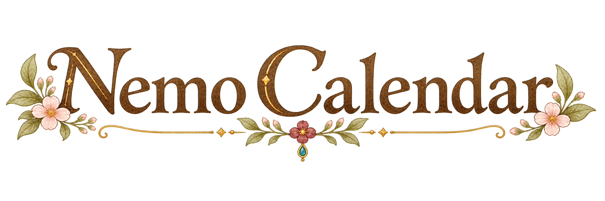

<!doctype html>
<html lang="ja">
<meta charset="utf-8">
<meta name="viewport" content="width=device-width,initial-scale=1">
<title>Nemo Calendar ロゴ比較</title>
<style>
  * { box-sizing: border-box; }
  body { margin: 0; padding: 24px; background: #f5eee1; color: #594633; font-family: sans-serif; }
  main { max-width: 1080px; margin: auto; }
  h1 { margin: 0 0 8px; font-size: 20px; }
  p { margin: 0 0 18px; font-size: 13px; }
  article { margin-bottom: 14px; padding: 14px 24px; border: 1px solid #dbc39c; border-radius: 18px; background: #fffaf1; }
  h2 { margin: 0; font-size: 14px; font-weight: 500; }
  .header { display: flex; min-height: 138px; align-items: center; justify-content: center; gap: 24px; }
  .books { width: 190px; height: auto; }
  .logo { width: 310px; height: auto; }
  @media (max-width: 640px) { body { padding: 12px; } article { padding: 14px; } .header { gap: 12px; } .books { width: 24%; } .logo { width: 65%; } }
</style>
<main>
  <h1>Nemo Calendar タイトルロゴ 3案</h1>
  <p>採用した本・瓶のイラストと比較。ロゴは実際の表示幅と同じ310pxです。現在のアプリのロゴは変更していません。</p>
  <article>
    <h2>① 金箔の書名風 — クラシックな文字と、小さな花の飾り</h2>
    <div class="header"></div>
  </article>
  <article>
    <h2>② 赤い花と手書き文字 — 柔らかい流れと、左側の赤い花</h2>
    <div class="header"></div>
  </article>
  <article>
    <h2>③ 王宮の紋章風 — 端正な文字と、小さな植物の紋章</h2>
    <div class="header"></div>
  </article>
</main>
</html>
